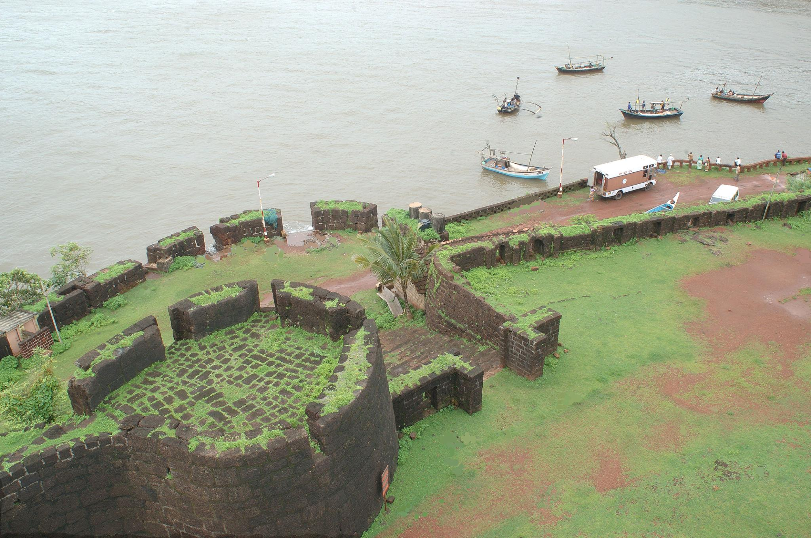
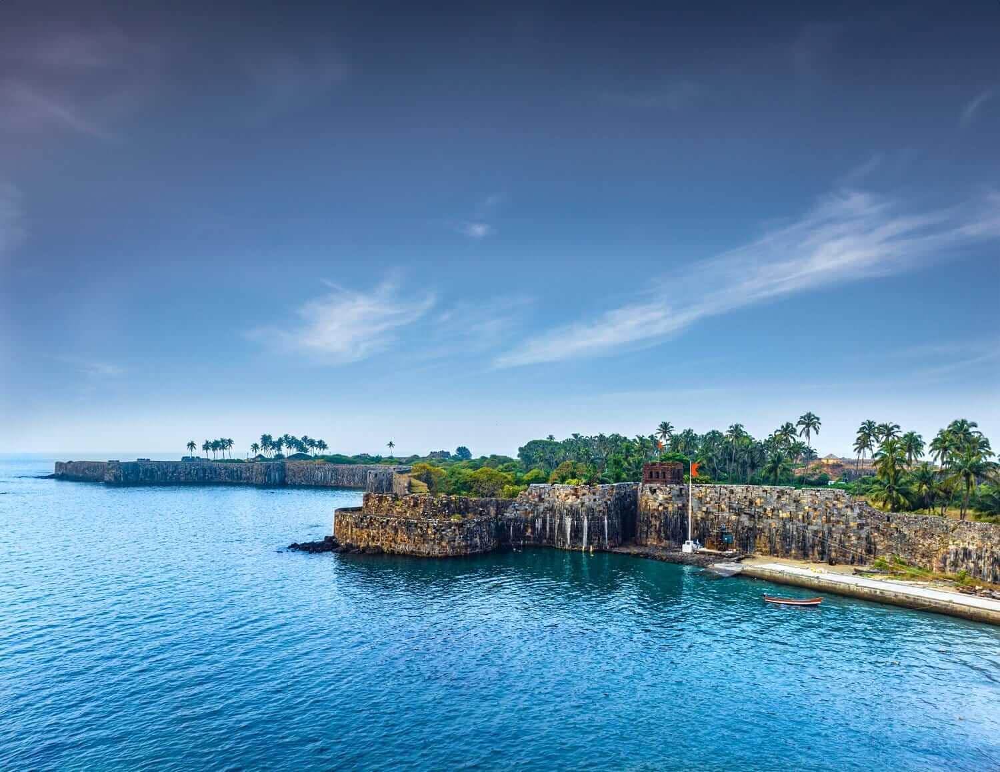
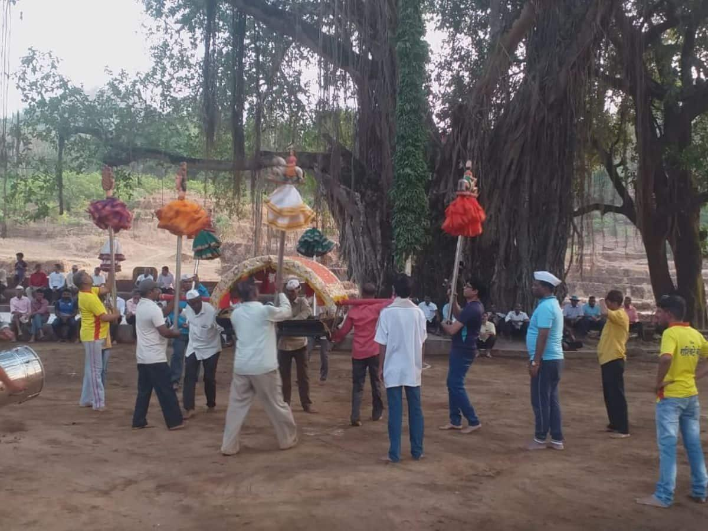
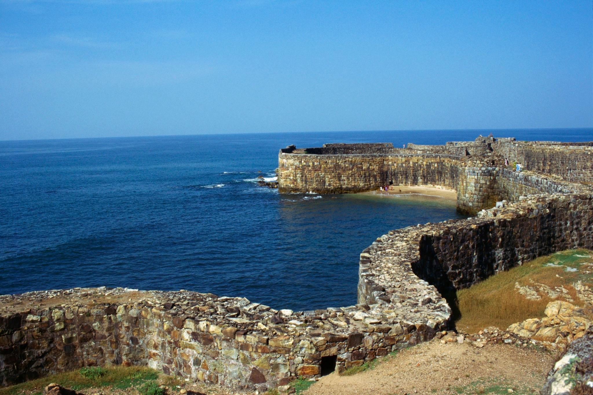
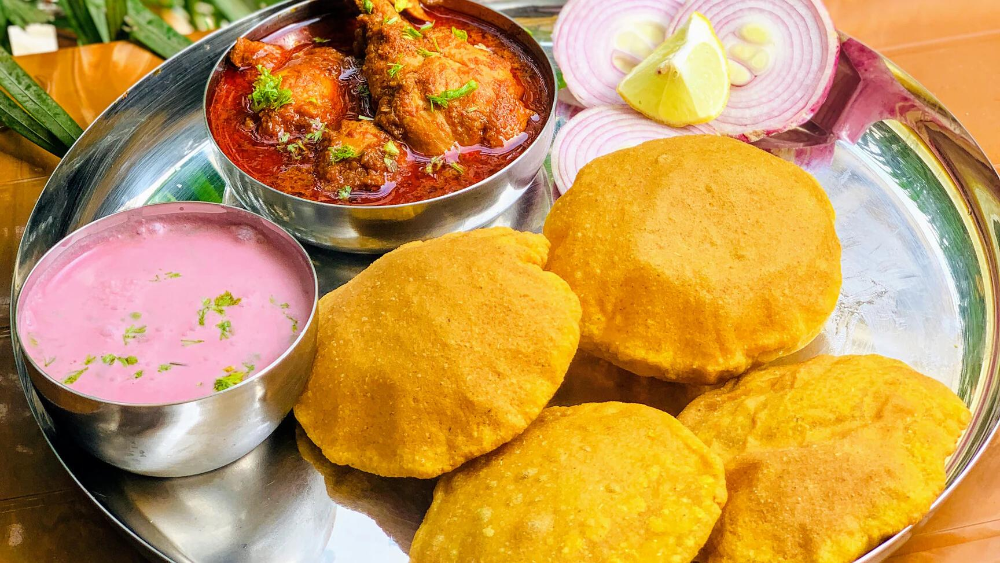
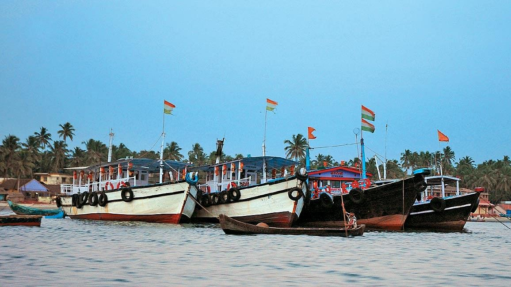
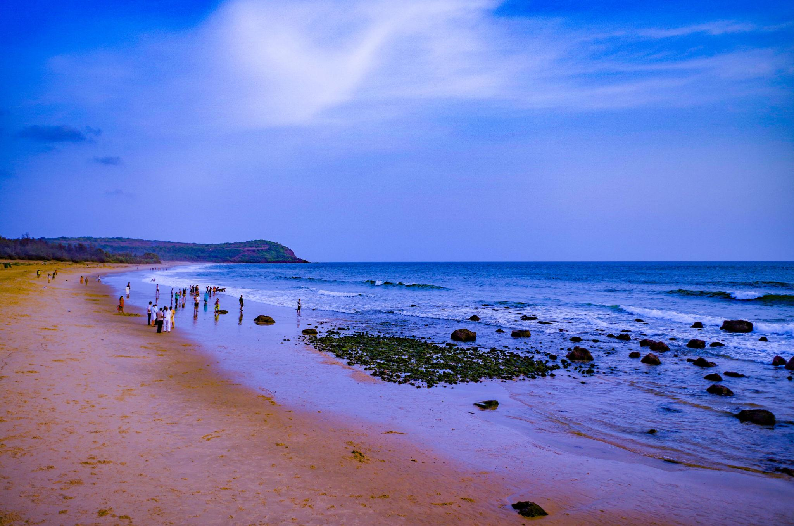
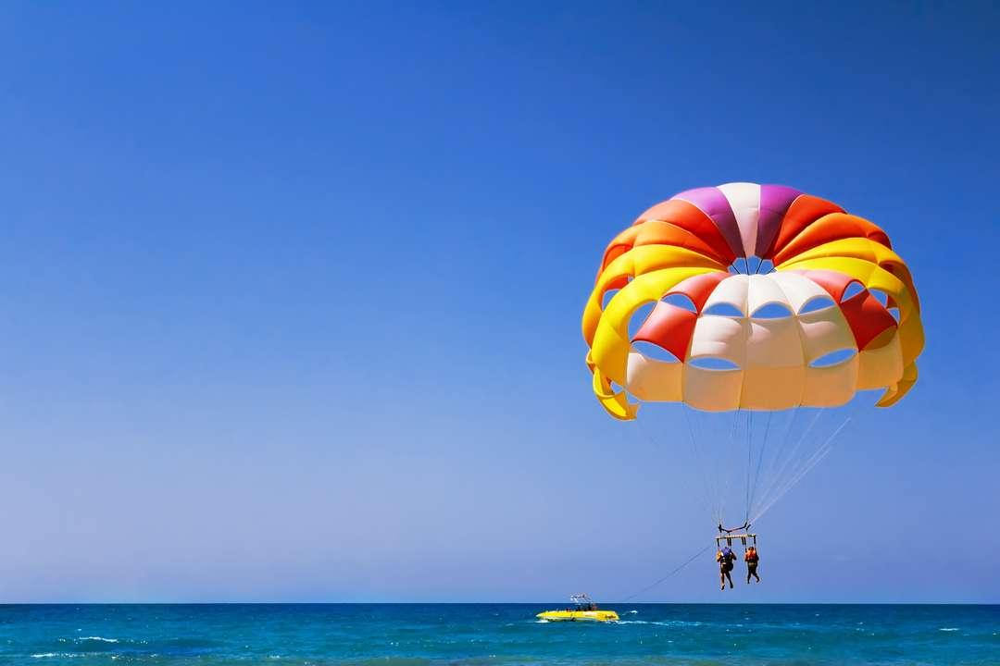

About

Sindhudurg is a picturesque district in Maharashtra's Konkan region, celebrated for its pristine Arabian Sea coastline, majestic maritime history, and lush Western Ghats landscape. It is the southernmost district of the Konkan division, bounded by Ratnagiri to the north, Goa to the south, and the Sahyadri mountains to the east.
- Location: Sindhudurg is located on the southern coast of the Konkan region in Maharashtra, India, bordered by Goa to the south and the Arabian Sea to the west.
- Famous as: It is famous as the home of the historic Sindhudurg Sea Fort, spicy Malvani cuisine, and pristine scuba diving beaches like Tarkarli.
History

The region has been ruled by various dynasties, including the Chalukyas, Mauryas, and the Maratha Empire. The district is named after the legendary 17th-century sea fort, Sindhudurg, built in 1664 by Chhatrapati Shivaji Maharaj on a rocky island off the Malvan coast to safeguard against foreign naval threats. It served as a critical stronghold for Maratha naval operations.
- The history of Sindhudurg is rooted in the Maratha Empire. Originally ruled by ancient Hindu dynasties like the Chalukyas, the region gained immense importance in 1664 when Chhatrapati Shivaji Maharaj built the iconic Sindhudurg Fort on a rocky island. This massive sea fortress served as a powerful naval base to defend the Konkan coast from foreign threats. The British East India Company took control of the area in 1818 after defeating the Marathas. Finally, in 1981, the territory was separated from Ratnagiri to become an independent district.
Culture

Sindhudurg's culture is a vibrant blend of Malvani and Konkani traditions. The community actively preserves ancient folk arts, most notably Dashavatar (a regional mythological theatre form), along with spirited Koli dances and bustling annual village fairs known as jatra. Traditional red-stone houses with sloping roofs are common, reflecting a lifestyle deeply rooted in age-old customs and maritime devotion.
- Main Festivals: The district celebrates Ganesh Chaturthi with grand decorations, alongside Shimgo (the Konkani Holi) and lively village temple fairs called Jatras.
- Traditional Arts: It is famous for Dashavatar, a traditional folk theatre about Lord Vishnu, and the colorful wooden toys handcrafted in Sawantwadi.
- Language: The primary languages spoken by the local people are Marathi and Malvani, which is a unique coastal dialect of Konkani.
Tourism

The district is a nature lover's paradise, boasting the clean, white sands of Tarkarli Beach, the serene backwaters of the Karli River, and various historic monuments like the Vijaydurg Fort. It is widely considered a premier marine tourism and adventure hub, attracting travelers for scuba diving, snorkeling, and exploring coastal coral reefs.
- Sindhudurg Fort: A massive 17th-century sea fortress built by Chhatrapati Shivaji Maharaj on a rocky island, accessible by a short boat ride from Malvan.
- Amboli Hill Station: A peaceful getaway nestled in the green hills of the Western Ghats, known for its misty weather and beautiful waterfalls.
- Tarkarli Beach: A beautiful stretch of white sand and clear water, famous as India’s top spot for exciting water sports like scuba diving and snorkeling.
Famous Food

The area is famous for Malvani cuisine, which relies heavily on coconut, fresh catch of the day, and unique spice blends. Signature dishes include Malvani fish curry, Solkadhi (a refreshing kokum-coconut drink), and Kombdi Vade (chicken curry served with fried flatbreads). The district is also renowned for producing the world-famous Alphonso (Hapus) mangoes, cashews, and kokum.
- Famous Food: The district is known for Malvani Fish Curry, a spicy coastal dish made with fresh fish and hot coconut gravy.
- Local Specialty: The most iconic local item is Solkadhi, a pink and sour drink made from kokum fruit and fresh coconut milk.
Economy

The local economy is heavily dependent on agriculture and fisheries. The region's major crops include rice, coconuts, and cashews, while small-scale industries focus on traditional handicrafts like Sawantwadi's famous lacquered wooden toys. In recent years, tourism has become a vital economic driver, bringing significant social mobility and employment opportunities to the area.
- Key Industries: The district relies heavily on commercial fishing along the coast, fruit processing factories, and a booming tourism and hospitality industry.
- Main Crops: The top agricultural crops are rice, along with valuable cash crops like cashew nuts, coconuts, and premium Devgad Alphonso mangoes.
Environment

Sindhudurg features remarkable biodiversity, stretching from the dense, wildlife-rich rainforests of the Western Ghats to the marine-rich tidal flats and mangroves of the coast. The coastal waters serve as migratory routes for large marine life, including whales. To protect this, significant conservation efforts are in place, particularly around the Malvan Marine Sanctuary.
- Climate: The district has a tropical climate with very hot summers, heavy rainfall during the monsoon months, and pleasant winters.
- Key Rivers: The major water bodies flowing through the region are the Gad River, the Karli River, and the Terekhol River.
- Protected Areas: The most famous conservation zone is the Malvan Marine Sanctuary, which protects rare corals and marine life.
Sports

While traditional rural games like Vitti Dandu and Kabaddi are deeply embedded in local village life, the region's focus has heavily shifted to water sports and adventure tourism. Tourists and locals alike engage in recreational sports such as scuba diving, parasailing, snorkeling, and banana boat rides, particularly around the waters of Malvan and Tarkarli.
- Traditional Sports: The most popular local sports are Kabaddi, Kho-Kho, and rural cricket tournaments played in village schools and grounds.
- Focus: The modern focus is heavily on adventure water sports like scuba diving, snorkeling, and parasailing to boost coastal tourism.